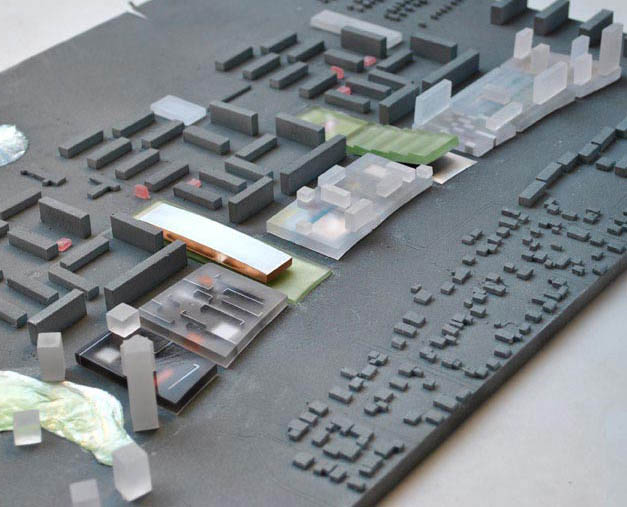
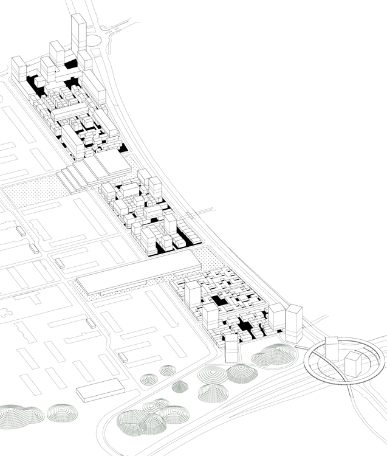
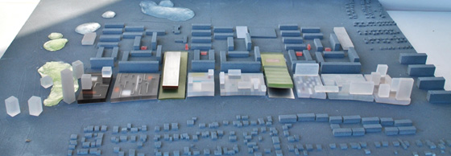

Return of the City
FORA + Beth Hughes
Competition - Urban Plan - Malmö - 2011

Urbanism of reconciliation
The original planning of Holma follows the modern paradigm, the classic opposition between slab and foreground. Apartment blocks float over public space with total separation of traffic and pedestrians. This amorphous, collective public and private space, (no-mans land) later turned out to be the ideal place for parking. The relative failure of this model has generated two fundamental reactions:
1- nostalgia for the old city : the street, the alley, the plaza (the urban syntax of the clear separation private-public)
2- desire for identity : every building must offer distinction, and announce itself as unique.
Can a new plan operate outside of the antagonism between modern and contemporary? Is it possible to complete the slab scheme without abandoning its objectives?
The redesign of Holma can invent new relationships between public and private space that will mend the existing condition without replacing it. It can inject the ground with activities, houses, patios, gardens and street life - urbanity.

On the project site, a neutral carpet made from different urban fabrics, serves as the foreground for the slabs floating above. These patterns are complex in their apparent modesty, dealing with different degrees of public and private, open and closed, intimate and inclusive. In contrast with the slabs, the carpet finally achieves the modern ideal: open urban living.
The carpet of new development infiltrates the existing plan, mediating between the competing movements and binding them together.
The future of Holma is no longer peripheral to the city. Holma shall be connected and urban: the return of the city.

Team: João Moura Fagulha, João Prates Ruivo, Raquel Maria Oliveira, Beth Hughes. Client: Europan Association.